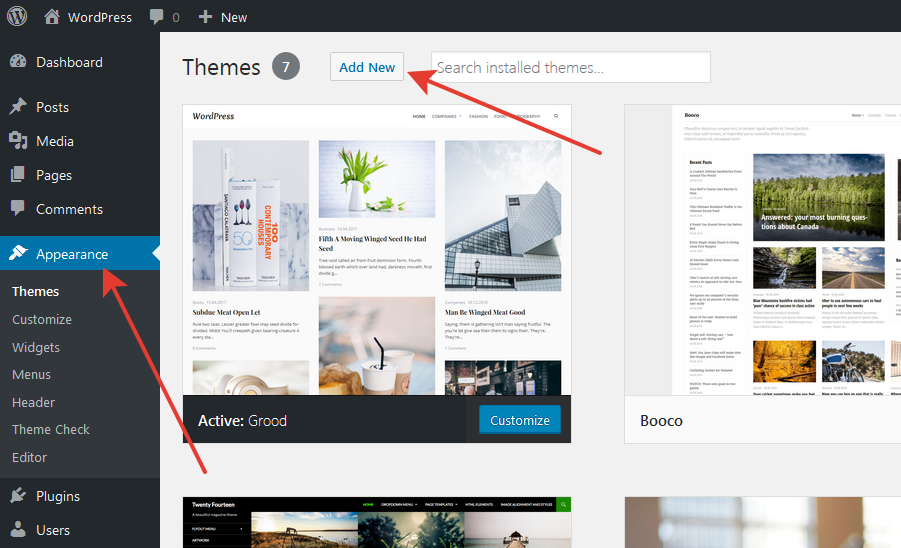
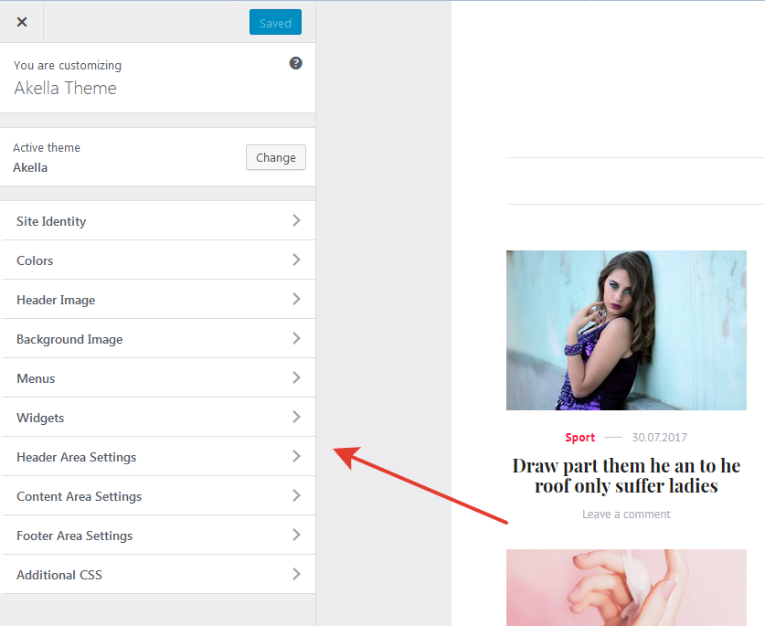
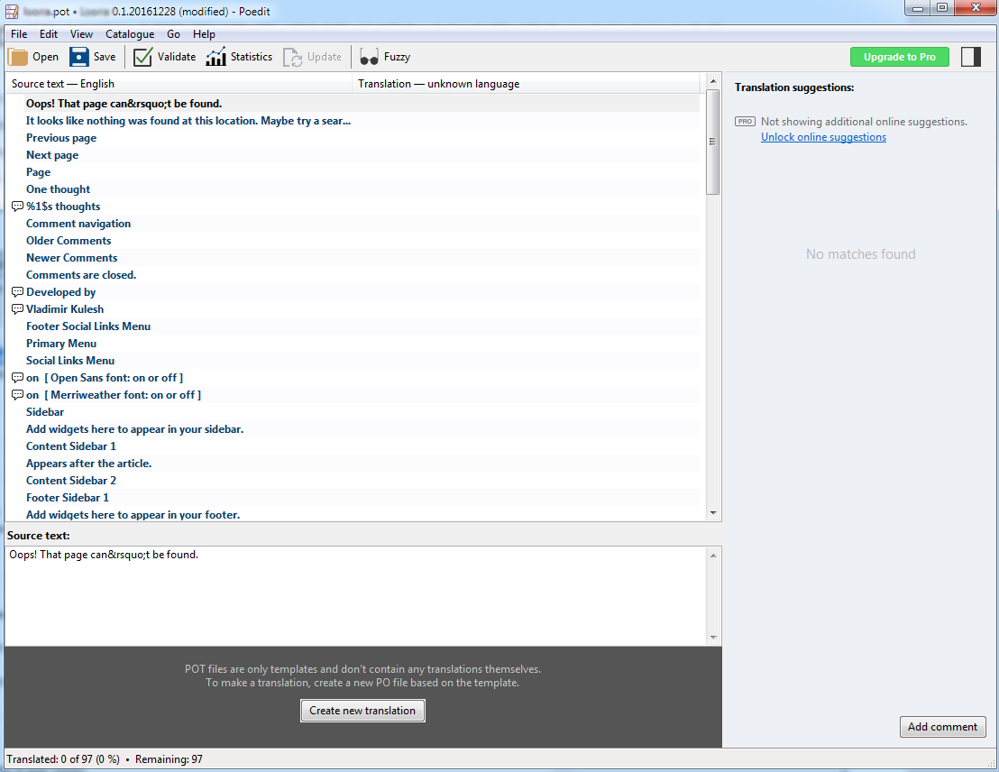
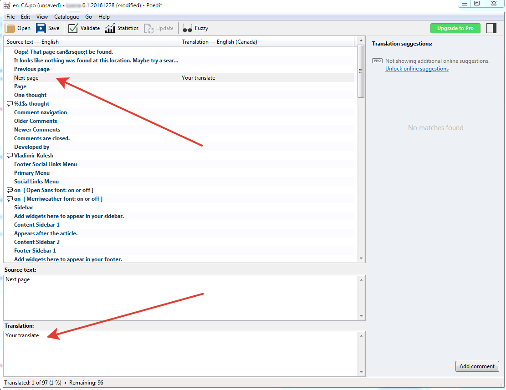

1.0. Theme Installation
Once you purchase the theme from Themeforest, you'll be able to load 2 file type:
- All Files and Documentation.
- Installable WordPress Theme File.
If you select to download all files and documentation (the zip file name will be themeforest-xxx-xxxxx.zip), you have to extract it out (to get akella.zip file) before installing it to WordPress system.
1.1. Install theme via WordPress Dashboard

- Go to "Appearance > Theme" section.
- Click "Add New" and select the "Upload" option.
- Upload the "akella.zip" file.
- All Done :).
1.2. Install theme via FTP
- Access to the file on your server using hosting control panel or ftp editor application.
- Go to "wp-content/themes" folder on your WordPress installation.
- Extract the zip file and put the "akella" folder there.
- Go to "Appearance > Theme" section to activate the theme.
- All Done :).
1.3. Importing Demo Content
- Locate the demo content xml file within the theme download folder from ThemeForest.
- In the WordPress admin panel go to Tools -> Import.
- Click on WordPress and select the file. Then click Upload and Import.
- Click Browse and upload the demo-content.xml file, then assign our demo authors to your users (or leave them to import as well). Make sure you check the Download and import file attachments to import all media as well. Click Submit and wait for the installation to complete.
- Once content has imported you will need to configure the menus and widgets.
- All Done :)
2.0. Customize
Customize area is one of the main feature in our theme. They give you abilities to made a changes to your site without touching a single line of code.

"Customize" give you an ability to live preview changes on the site. In this field you can change a theme's custom header content, layout, sidebar position, customize menus and widgets and other.
You can go to theme customize at "Appearance > Customize" section from WordPress admin area.
2.1. Creating Menu
You can create menu by going to "Appearance > Menu" section.
Akella comes with three locations for custom WordPress menu: Primary Menu, Footer Menu and Social Links Menu. Primary Menu supports several levels of drop-downs.
To set up your menu, navigate to “Appearance > Menus” from your WordPress Dashboard (you can also do this from the Customizer). Enter menu name, add your links from the sidebar and arrange them using drag and drop.
When you're done, select the theme location under the Menu Settings section. Don't forget to save it all by clicking the Save Menu button.
Note: If you set up Social Links Menu in the sidebar select "Custom Links" and enter your social links.
2.2. Sidebars
The sidebar locations in the theme are referenced below.
- Sidebar: Appears to the right or left of the main content.
- Content Bottom 1: Appears before the comments on posts.
- Content Bottom 2: Appears at the bottom of the content on posts.
- Footer Sidebar: Appears in site footer.
3.0. How to translate the theme into another language
All of our themes are written in English so you will need to translate the theme into your language using Poedit.
First, go to WordPress Dashboard > Settings > General > Site Language > Select your language > Save.
Then, download & install Poedit.
Open Poedit and click Open on the top-left of the screen. Within your theme's files, find the "languages" folder and select the "akella.pot" file.
A long list of text elements you may translate will appear in the box as shown below.

Select a line you would like to translate and add the translation in the Translation box as shown below.

When done, go to File and Save as and save the new files to the languages folder within the theme.
4.0. Sources and Credits
Akella Theme bundles the following third-party resources:
HTML5 Shiv v3.7.0, Copyright 2014 Alexander Farkas
Licenses: MIT/GPL2
Source: https://github.com/aFarkas/html5shiv
Bootstrap by @mdo and @fat
License: MIT
Source: http://getbootstrap.com/
Font Awesome icon font by Dave Gandy
Font License: SIL OFL 1.1
Code License: MIT License
Source: http://fontawesome.io
Slick Carousel by Ken Wheeler
License: MIT
Source: http://kenwheeler.github.io/slick/
imagesLoaded by David DeSandro
License: MIT
Source: http://imagesloaded.desandro.com/
Masonry by David DeSandro
License: MIT
Source: http://masonry.desandro.com
Once again, thank you so much for purchasing this theme. As I said at the beginning, I'd be glad to help you if you have any questions relating to this theme. No guarantees, but I'll do my best to assist. If you have a more general question relating to the themes on ThemeForest, you might consider visiting the forums and asking your question in the "Item Discussion" section.